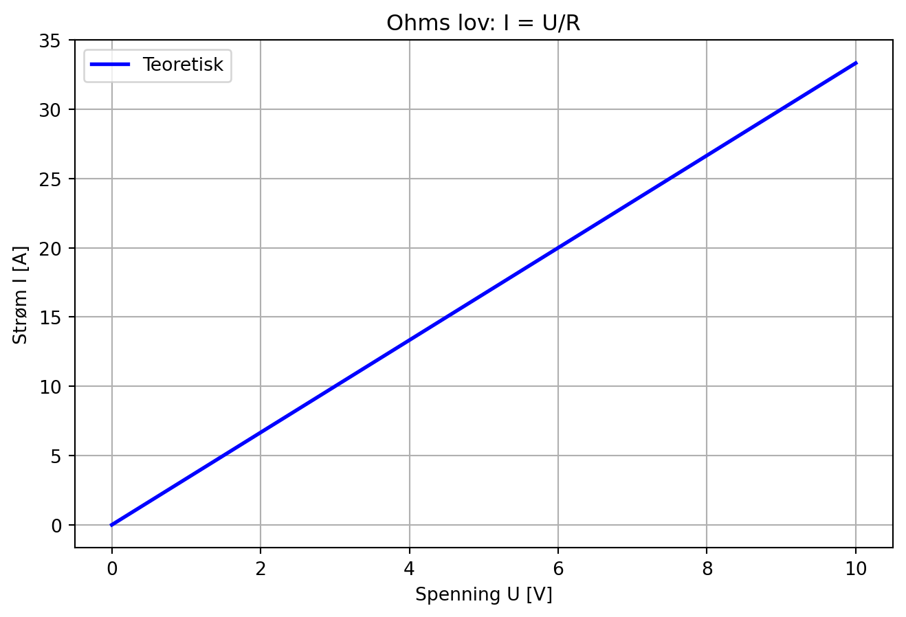
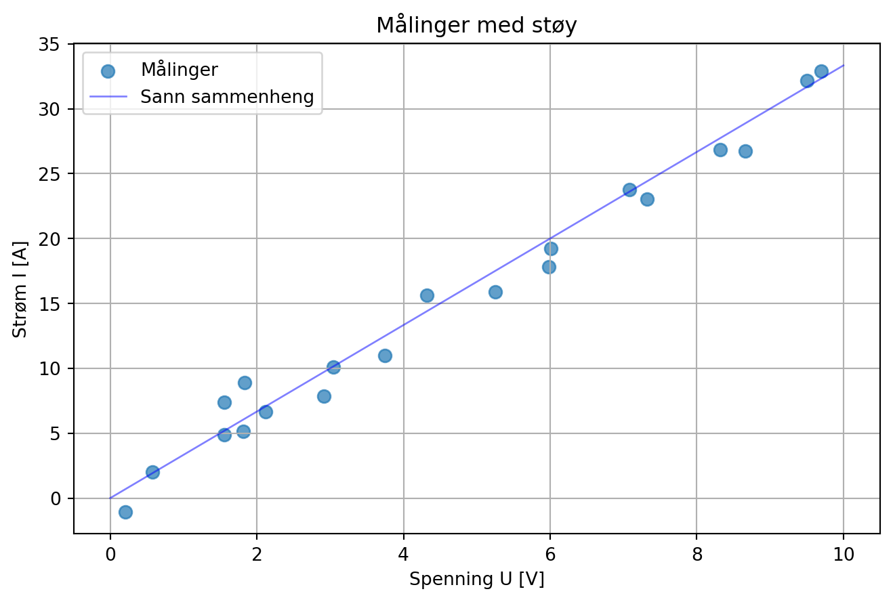

Dette notatet er skrevet av en LLM som supplement til forelesningsmateriell i HON2200.
Læringsmål
Etter å ha jobbet gjennom dette notatet skal du kunne:
Forstå hva lineær regresjon er og når det brukes
Implementere lineær regresjon med numpy
Forstå begrepene støy og måleusikkerhet
Estimere usikkerheten i regresjonskoeffisienter
Bruke bootstrap for feilestimering
Motivasjon: Ohms lov
La oss starte med et fysikkeksempel. Ohms lov sier at strøm \(I\) er proporsjonal med spenning \(U\):
\[I = \frac{1}{R} \cdot U\]
der \(R\) er motstanden. Dette er en lineær sammenheng - hvis vi plotter \(I\) mot \(U\), får vi en rett linje.
import numpy as npimport matplotlib.pyplot as plt# Teoretisk sammenhengR =0.3# OhmU = np.linspace(0, 10, 100)I = U / Rplt.figure(figsize=(8, 5))plt.plot(U, I, 'b-', linewidth=2, label='Teoretisk')plt.xlabel('Spenning U [V]')plt.ylabel('Strøm I [A]')plt.title('Ohms lov: I = U/R')plt.legend()plt.grid(True)plt.show()

Virkelige målinger har støy
I virkeligheten får vi aldri perfekte målinger. Det er alltid noe støy:
np.random.seed(42)# Simulere målinger med støyn_målinger =20U_målt = np.random.uniform(0, 10, n_målinger)I_målt = U_målt / R + np.random.normal(0, 1.5, n_målinger) # Legger til støyplt.figure(figsize=(8, 5))plt.scatter(U_målt, I_målt, s=50, alpha=0.7, label='Målinger')plt.plot(U, I, 'b-', linewidth=1, alpha=0.5, label='Sann sammenheng')plt.xlabel('Spenning U [V]')plt.ylabel('Strøm I [A]')plt.title('Målinger med støy')plt.legend()plt.grid(True)plt.show()

Lineær regresjon: Finne den beste linjen
Vi modellerer sammenhengen som:
\[y = \beta_0 + \beta_1 x + \varepsilon\]
der:
\(\beta_0\) er konstantleddet (skjæring med y-aksen)
\(\beta_1\) er stigningstallet
\(\varepsilon\) er et støyledd (det vi ikke kan forklare)
Målet er å finne \(\beta_0\) og \(\beta_1\) som minimerer summen av kvadrerte avvik: